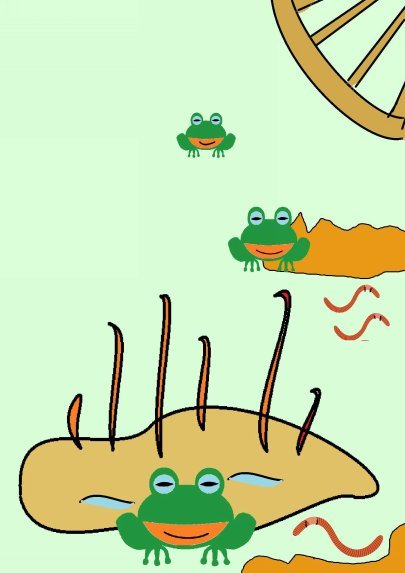

| ⑤湯治 | |
| 深川龍 | |
| UNKNOWN (2016) | |
第五話
小ナラ林の中の巾が一間にも足りぬ農道にはぎっしりと落ち葉がつもっておった。その道を下肥運ぱん車が通って行った。下肥とは肥料にするための人間のフン尿のことじゃ。化学肥料が無い時代の事じゃによって、どこでも下肥は重要なチッソ肥料として使われた。
下肥運ぱん車は大八車の車輪の心棒の上に荷台の代わりとしてＴ字形にした丸太ん棒をシーソーのように取り付けたものじゃった。丸太ん棒にはバランス良く前に三桶、後に三桶のたごが吊り下げられておった。引っ張っ
ておるのはギンベェさんじゃった。
秋の収かくが終わって、麦をまく時期になっておった。ギンベェさんの大きな野ツボにはフン尿がなみなみと入った。やがて、野ツボのフン尿はゆったりと発酵し、黄金の液体へとじゅく成する。植物たちにとってはこの上ない美味なごちそうなのじゃ。
野ツボには家族が入った後に捨てたお風呂の湯も混ざっておった。この風呂の使い終わった湯を湯どのと呼んでおった。フン尿も湯どのも大切な肥料じゃった。町まで下肥をもらいに行く農家もあった。
フン尿は体外に排出されるまでは人間の体の中にたまっておるものじゃ。フン尿がきたないと言うならばそれがたまっておる人間の体の中はどう云うことになる。じ
ゃが、人間の体の中は汚くなかろう。と云うことになればフン尿は決して汚くはないということになる。ここまで言えば奇弁になるが、要はフン尿も食物が人間の体内で変化したものじゃから汚い汚いとばかり云わんでくれということじゃ。
霜がおりる頃になると、ギンベェさんの野ツボからはふつふつと湯気がでる。ギンベェさんは野ツボで下肥を発酵させる名人じゃった。フン尿に住みつく細菌にも良い株と悪い株があるらしいのじゃ。ギンベェさんは良い

株だけをはんしょくさせるのが得意なのじゃった。春の植えつけの頃になると、フン尿は分解して香水にも似た香りになったもんじゃ。くどいようじゃが、もう少し云わせてもらおう。フン尿も元はといえば人間の口から入ったおいしい食物であったり、飲み物であったものじゃから香りの良い、美しいものに変わってもふしぎはなかろう。
さて、冬場になった。農閑期のこととて村の仲良し数人が集まって、近くの温泉に湯治に行く相談がまとまった。ギンベェさんもその一人じゃった。湯治は三、四日から一週間ほど続く。かみさんがある者はかみさんも連れて行く。湯治は米や野菜など食料を持って行き、温泉
場に宿泊し自炊するのじゃった。
ところが、湯治に行く前日になって、ギンベェさんは行けなくなった。かみさんの親元の法事に出かけねばならなくなったからじゃった。
「法事は一人で行きますから、あんたは湯治に行きなされ。」
かみさんはそう言ってくれるが、ギンベェさんは炊事がまるっきり出来ないので、かみさんがいっしょに行ってくれないと困るのじゃった。
「義理を欠かす訳にゃいかん。」
ギンベェさんは温泉に行きたくて仕方がなかったが、しぶしぶかみさんの親元の法事に行くことにした。
その日は朝から、ちらちらと小雪が降っておったが、ギンベェさんの仲良したちは三重県三重郡菰野町の山中にある湯ノ山温泉へ湯治にでかけていった。ギンベェさんはそれを見送った後、かみさんと法事にでかけた。
かみさんの親元はギンベェさんが温泉旅行までキャンセルして法事に来てくれたので、おおいによろこんで歓待してくれた。
「そうですかい、そんなにまでして来てくださったのかい。まあ、どんどんやっておくんなさい。」
ギンベェさんはよってすっかり上きげんになった。
「あんたはゆっくりしておいなされ。私はちょっと先にもどりますでな。」
かみさんはギンベェさんを自分の親元に置いて、先にもどっていった。
「もっと、ゆっくりしていきなされ。たった一里じゃ。チョウチンをさげて行けばなんと言うこともない。」
「だいぶ、積もってきましたしな。それにこんな日にはタヌキの奴がいたづらしますんでなあ。」
ギンベェさんはごちそうの入った引き出物をぶら下げて、日暮れ前の野道をぞうり雪をふみながら帰っていった。
「雪やこんこん、アラレやこんこんか。また、降ってきやがった。今夜は積もるぞ。それにしても今頃、湯治に行った連中は温泉に入って雪見酒じゃろな。」
はおっておるミノも雪で白うなってきた。一杯きげんで歩いているので寒さは感じない。むしろ、暑いぐらいじゃった。
ギンベェさんはちょうど、自分の野ツボのあるあぜ道に来たとき、ぐうぜんにもタヌキの親子に出会ってしまった。
「あっ、タヌキめ、俺は化かされはせんぞ。」
ギンベェさんはタヌキに向かって大声を出した。何だか今日は化かされそうな気がしていたので化かされまい
としたのじゃった。じゃが、それがかえっていけなかっ
た。タヌキの光る丸い目を見ると、もうたまらない。タヌキがきれいな湯女に見えてしまった。
「あらっ、お客さんは法事とかで来れないって聞きましたけど。」
湯女はたすきがけをした白い二の腕を見せた。
「おうっ、法事は終わった。ぬくぬくと湯気が出てあったかそうな温泉じゃのう。こんなところに温泉などあったかな。」
ギンベェさんは首をかしげた。
「そりゃもう、あっ、温泉にお入りになるなら、ごちそうの入った引き出物はこちらに預かります。」
湯女はギンベェさんの持ち物を受け取った。
「そうかい。じゃ、ひと風呂浴びさせてもらうことにするか。雪見風呂も良いもんじゃでのう。」
ギンベェさんは着物をぬいで丸はだかになると、湯気が出る野ツボに入ってしまった。
「じゃ、ごゆるりとどうぞ。」
湯女は法事の引き出物を持って消えてしまった。ギンベェさんはそれに気づかない。
「酒はぞんぶん呑ませてもろうたし、温泉はぬくぬくとあったけえ。
坂はぁ～、照る照るぅ～、鈴鹿はぁ曇るっと、・・・。」
ふわふわと小雪がまう中で、ギンベェさんは野ツボにつかって、きげん良う唄なんぞを歌っておった。ギンベェさんの歌声が白くうす化粧した野山を流れていった。
ギンベェさんのかみさんは聞きなれた声が北風に乗って遠くから聞こえてくるような気がした。まさか、と思いながら、小雪がまう夕ぐれの戸外に出た。確かに聞こえて来る。かみさんは声に向かった歩いた。ギンベェさんの馬子唄はますます、さえわたっておった。
「あんた、何をしてるの。」
かみさんがぜっきょうした。
「おお、おまえか。一緒に入れ。良いお湯だ。」
ジャコウのような匂いになるのは少し先のことなので、野ツボに入っておるギンベェさんの体から湯気と一緒に立ちのぼるにおいはまあ臭い。
ギンベェさんは一つ大きなくしゃみをした。
「おまえ、こんなところで何をしておる。」
「あんたこそ、何をしておられるのじゃ。」
ギンベェさんは自分が野ツボに入っていることに気づいて、丸裸のまま野ツボから飛び出した。その勢いで野ツボから飛び散ったフン尿が枯れ草に積もった雪を黄色く染めた。
かみさんは雪をすくい集めてギンベェさんの頭からかけた。
「こっ、こら、何をする。」
「あんた、早く体を何とかして下され。臭そうてたまらん。」
近くの小川はかれている。仕方なく、ギンベェさんは丸裸のままかけ出した。
「あんた、待って下され。」
かみさんがギンベェさんの着物をひろって追いかける。雪はますます激しうなってギンベェさんの体に降りかかる。ギンベェさんが小ナラ林の中をぬけて家に帰り着いた頃には降りかかった雪がとけてギンベェさんの丸裸はきれいに洗われておった。
真っ赤になったギンベェさんの丸裸から、ぽっぽっと湯気が出ておった。
「おい、冷たい水をかけてくれ。」
かみさんはギンベェさんの体に井戸水をくんできてかけた。
「まだ、臭い。」
かみさんはそう言ってギンベェさんの丸裸を手ぬぐいでふいた。
翌日、引き出物のうつわだけギンベェさんの家の前においてあったそうな。
仲良したちが湯治から帰ってきた。
「ギンベェさん、何か良ことでもあったかな。湯治にいったわしらより、ずっと若返ったようじゃ。」
ギンベェさんはいつもより元気で、肌が若々しくつやつやしておった。ネズミの尿やウグイスのフンより、ギンベェさんの野ツボの方がずっと効いてきれいになったそうじゃ。
フンの中にはタンパク質やアミノ酸、ビタミンやミネラル、ホルモンまでふくまれておるし、尿の中にはひふの保水成分の尿素が含まれておる。これらはさらに野ツボの中で発酵して、ひふや粘まくから吸収されやすい小さな分子に分解されておるでのう。
じゃが、それはギンベェさんの野ツボでのことじゃから、まねをなされても必ずしも効くと保証はできませぬぞ。
（完）
深川龍
の
アニマルシリーズ③④
も
お読みください。
。
- 1 -